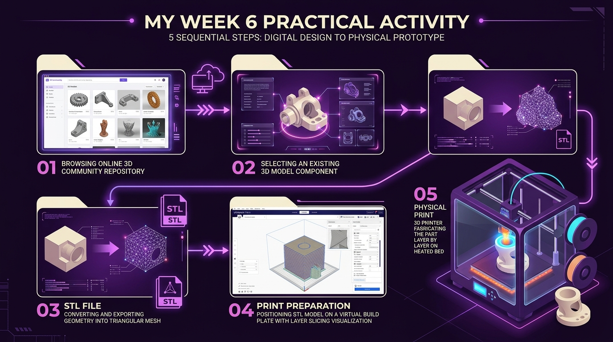

CRAB MODEL — PRACTICAL ACTIVITY
“Due to limited time, I selected an existing 3D Crab model from Printables, exported the geometry as an STL file, prepared the build orientation, and fabricated it on the Bambu Lab H2S.”

PRINTABLES
“Due to limited time, I selected an existing 3D model from Printables rather than creating one from scratch.”
CRAB MODEL
SELECTED MODEL: 3D CRAB
Identified organic crab geometry featuring dual claws, curved eye domes, and leg overhang structures.
STL FILE
“I exported the selected Crab model as an STL file.”
PRINT PREP
Crab model positioned on virtual build platform with orientation and layer heights configured for bed adhesion.
PHYSICAL PRINT
Bambu Lab H2S producing the Crab object layer by layer to create the completed physical component.

3D CRAB MODEL
“Selected from Printables to evaluate dual claws, curved eye domes, and leg overhang geometries on the Bambu Lab build bed.”